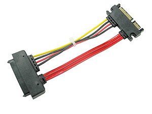

Grow Up Japan Smart Drive Proof 25
Žvilgsnis iš arčiau
Dėžutė labai primena savo pirmtako, Smart Drive Classic, dėžutės dizainą. Dėžutės spalvų gamoje dominuoja juoda ir balta. Ant dėžutės priekio pavaizduotas pats Smart Drive Proof 25 įrenginys, trumpas produkto aprašymas anglų kalba, patentų numeriai, Grow Up Japan logotipas. Užpakalinėje dėžutės dalyje - nuotraukomis iliustruota montavimo instrukcija.Štai ką radau dėžutėje:
- Grow Up Japan Smart Drive Proof 25.
- Tvirtinimo varžtukus.
Pats įrenginys savo išore ir vidumi labai primena savo pirmtaką Smart Drive Classic. Skiriasi mastelis (matmenys) ir tai, kad Smart Drvie Proof 25 turi išvestas SATA/SAS duomenų ir maitinimo jungtis. Pats įrenginys yra įprasto Grow Up Japan kompanijai dizaino. Tai juoda, glotni, visiškai uždara dėžutė, kurios dangtelis yra tvirtinamas 6 komplekte pridėtais varžteliais.
Techniniai įrenginio parametrai:
- Modelio: Smart Drive Proof 25
- Spalva: Juoda
- Sąsaja: SATA arba SAS
- HDD formatas: 2.5"
- Įrenginio formatas: 3.5"
Aušintuvo dangtelio šonai yra padengti gumine tarpine, kuri hermetiškai uždaro korpusą, susukus visus 6 tvirtinimo varžtelius. Dangtelio centrinė dalis yra padengta garsą sugeriančia medžiaga. Virš jos aliuminio plokštelė, sujungta su pačiu dangteliu. Tai šilumos nešiklis, turintis pernešti HDD šilumą į aušintuvo išorę.
Aušintuvo vidaus dizainas yra labai panašus. Visas vidaus perimetras yra išklotas storu garsą sugeriančios medžiagos sluoksniu. Centre - aliuminio dėžutė, taip pat, sujungta su aušintuvo išore. Ji stangriai apglėbia HDD ir neleidžia jam judėti.
SATA/SAS duomenų ir maitinimo jungtys yra išvestos į įrenginio išorę, todėl montuojant diską nereikia vargti su jokiais papildomais kabeliais. Pats diskas, įrenginio viduje, yra niekaip netvirtinamas. Jis yra įstumiamas į vidinę Smart Drive Proof 25 jungtį, o jo padėtį fiksuoja vidinė aliumininė dėžutė.
Nors Smart Drive Proof 25 ya tokio pat dydžio, kaip visiems pažįstamas SATA diskas, jo jungtis nėra standartinė, įprasta. Tai SATA/SAS jungtis, kuri šiek tiek skiriasi nuo standartinės SATA jungties (žiūrėti nuotrauką viršuje). Dėl šio mažo skirtumėlio, gali nepavykti prie savo kompiuterio prisijungti Smart Drive Proof 25 įrenginio, nes standartiniai SATA duomenų ir maitinimo kabeliai čia netinka. Reikia specialaus SMART SATA CABLE ( SAS-SATA) perėjimo, kurį Grow Up Japan parduoda atskirai (nuotrauka kairėje).
Tai tikrai nėra įrenginio trūkumas, SAS jungtis leidžia įrenginį naudoti tiek su SATA tiek su SAS ( Serial Attached SCSI) diskais. Tiesiog tai šioks toks nepatogumas nepatyrusiam vartotojui.
Dėl SAS jungties Smart Drvie Proof 25 yra suderinamas ne su visais HDD stalčiukais. Pav. jis netinka naudoti su Icy Box 168SK-B, bet puikiai tinka su GPU Smart Drive NEO. Priš pirkdami šį įrenginį, būtinai atkreipkite dėmesį, ar jūsų naudojama įranga bus su juo suderinama.
Pro et Contra
Pliusai:- lengvas montavimas
- palaiko SATA ir SAS diskus
- ilgaamžės SATA/SAS jungtys
- palaiko hot-swap
- tinka ne visiems HDD stalčiukams
- nepridėtas SAS - SATA perėjimas
 Grow Up Japan Smart Drive Proof 25 - tai tikrai geras sprendimas tikriems tylos mėgėjams. Smart Drive Proof 25 sumontuotas diskas yra ne tik apsaugotas nuo aplinkos poveikio (drėgmės ir dulkių) bet ir pakankamai aušinamas. Šis įrenginys gali praversti, norint panaudoti nuo nešiojamojo kompiuterio "atlikusį" 2.5" SATA diską. Ar kuriant tarnybinę stotį (serverį), kurioje naudojami didesni RAID masyvai. Vienintelis šio įrenginio trūkumas yra tas, kad nėra pridėto SAS - SATA perėjo, kas gali apsunkinti įrenginio montavimą paprastam kompiuterio vartotojui.
Smart Drive Proof 25 suteikiu
9 balus iš
10 galimų.
Grow Up Japan Smart Drive Proof 25 - tai tikrai geras sprendimas tikriems tylos mėgėjams. Smart Drive Proof 25 sumontuotas diskas yra ne tik apsaugotas nuo aplinkos poveikio (drėgmės ir dulkių) bet ir pakankamai aušinamas. Šis įrenginys gali praversti, norint panaudoti nuo nešiojamojo kompiuterio "atlikusį" 2.5" SATA diską. Ar kuriant tarnybinę stotį (serverį), kurioje naudojami didesni RAID masyvai. Vienintelis šio įrenginio trūkumas yra tas, kad nėra pridėto SAS - SATA perėjo, kas gali apsunkinti įrenginio montavimą paprastam kompiuterio vartotojui.
Smart Drive Proof 25 suteikiu
9 balus iš
10 galimų.Modding.lt komanda dėkoja Hiroki Iida iš www.gup.co.jp už apžvalgai suteiktą produktą.
Jei norėsite pakomentuoti mano straipsnį arba pareikšti savo nuomonę, apsilankykite Modding.lt forume.


{kind=link}
{kind=link}
{kind=link}
{kind=link}
{kind=link}
{kind=link}
{kind=link}
{kind=link}
{kind=link}
{kind=link}
{kind=link}
{kind=link}
{kind=link}
{kind=link}